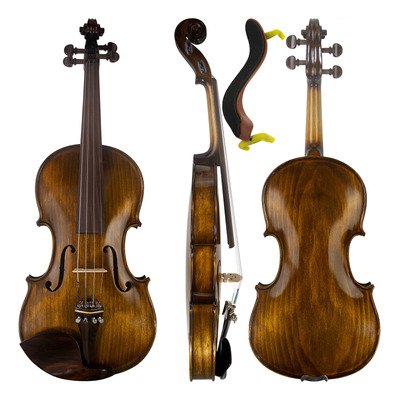

Home Violinos Contato
L'ultimo pezzo

O violino L'ultimo pezzo é um violino profissional e acompanha os seguintes itens:
- Cordas profissionais Thomastik Superflexible
- Arco profissional
- Breu profissional
- Espalheira profissional
- Pano para limpeza
- Case (Entre em contato para escolher sua cor entre branca, cinza ou preta)
- Itens de praxe
Comprar Já!